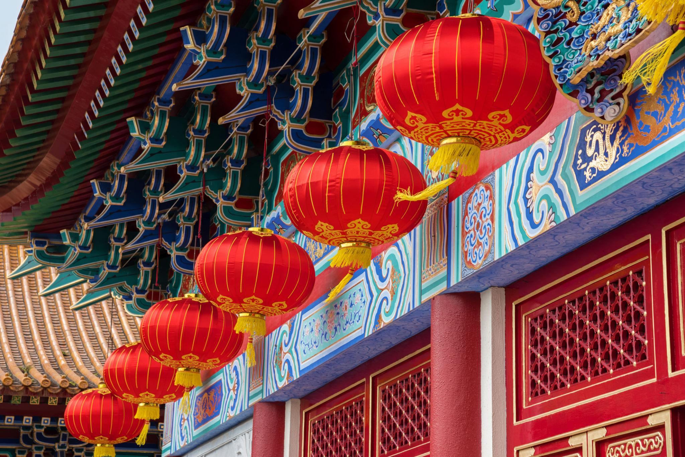

História milenar
A China possui milhares de anos de história, marcada por diferentes dinastias, construções monumentais e importantes transformações. Sua trajetória influenciou a arquitetura, a filosofia e os costumes de diversas gerações. A Grande Muralha é um dos maiores símbolos desse passado histórico.